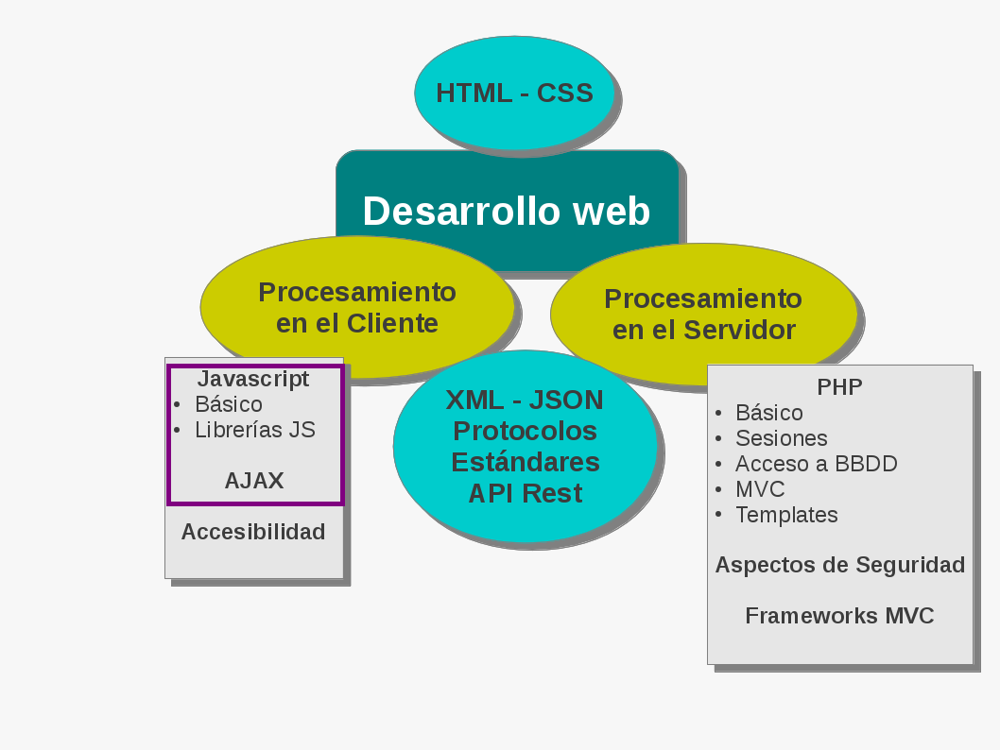
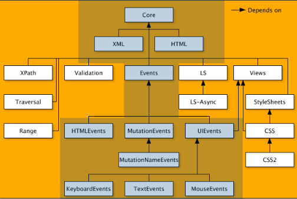
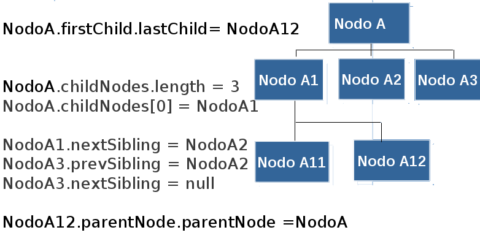
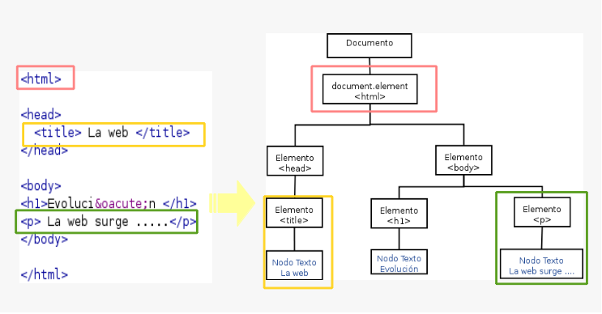
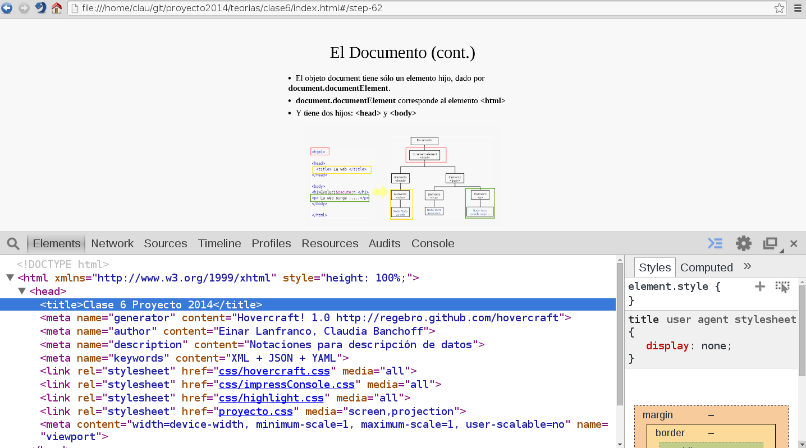
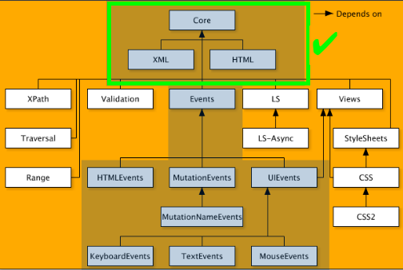
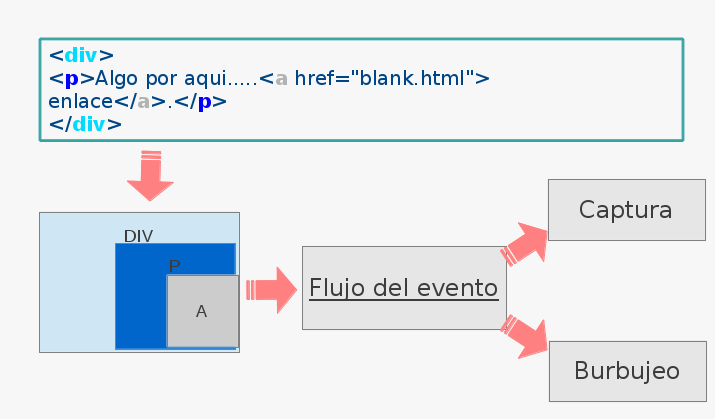
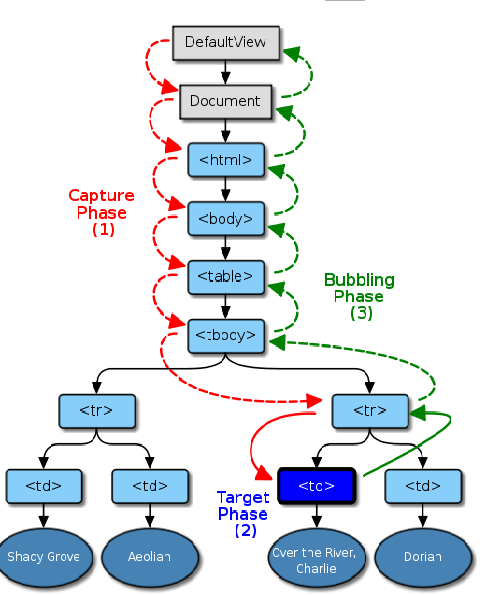
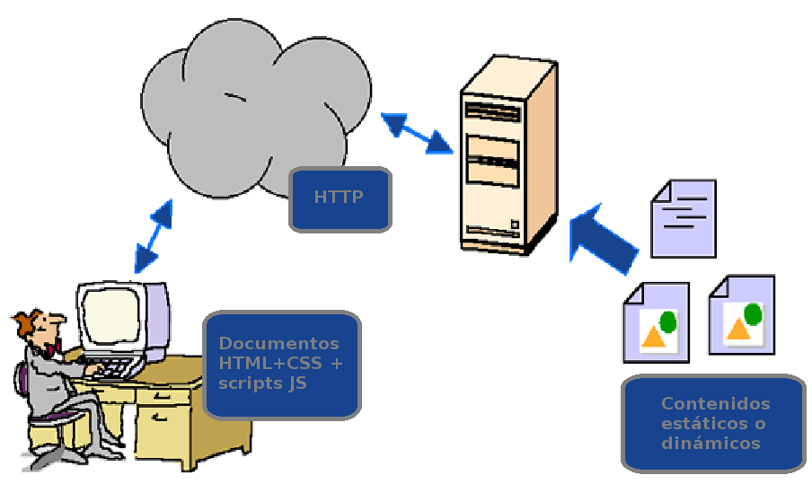

Proyecto de Software
Cursada 2014
Hoy seguimos con ...
Temario
- Repaso Clase Anterior
- El Modelo de Objetos del Documento (DOM)
- Procesamiento en el cliente
Repaso - XML, JSON, YAML ....
- SurgeN de la necesidad de contar con un mecanismo para describir información estructurada.
- XML - eXtensible Markup Language
- Es un lenguaje de marcas.
- Con una sintaxis estricta
- Con posibilidad de definir la gramática: DTD - Schemas
- Con especificaciones asociadas: XSL - Schemas - etc.
- JSON - YAML
- Notaciones alternativas
- Más ligeras
- Populares
- ¿Cuál usamos?
El Modelo de Objetos del Documento
DOM
- El Modelo de Objetos de Documento es una API, que permite acceder a los contenidos de un documento HTML/XML.
- Proporciona una representación estructurada, orientada a objetos, de los elementos individuales y el contenido del documento, con métodos para recuperar y fijar las propiedades de dichos objetos.
- Proporciona métodos para agregar y eliminar objetos al documento.
- También proporciona una interfaz estándar para trabajar con eventos.
Arquitectura DOM

Actualmente trabajando en DOM4
Interfaz Node
- El documento se ve como un árbol de nodos.
- Cada nodo tiene sus propios métodos y propiedades, pero todos implementan la interfaz Node:
- Un conjunto común de métodos y propiedades relacionadas con la estructura de árbol del documento.
- Algunos métodos implementados por esta interfaz:
- insertBefore()
- appendChild()
- removeChild()
- cloneNode()
- replaceChild()
Interfaz Node
- También proporciona varias propiedades que reflejan la estructura de árbol y permiten recorrerlo.
- Algunas propiedades:
- firstChild
- lastChild
- childNodes
- parentNode
- nextSibling
- prevSibling
Un ejemplo
En un documento HTML/XHTML
- El documento entero es un nodo documento.
- Cada elemento HTML es un nodo elemento.
- Los textos que aparecen en las páginas son nodos de texto.
- Los atributos de los elemento son nodos atributos.
- Los comentarios son nodos comentarios.
Cada nodo ...
- Posee propiedades tales como: nodeName, nodeValue y attributes.
- Los valores de estos atributos varían según el tipo de nodo.
- Ejemplo:
<img src=”casita.png” alt=”..”...>
El documento
- La raíz del árbol es el objeto document.
- Este objeto implementa la interfaz Document.
- Esta interfaz proporciona métodos para acceder y crear otros nodos en el árbol del documento.
- Algunos métodos son:
- getElementById()
- getElementsByTagName()
- createElement()
- createAttribute()
- createTextNode()
El documento (cont.)
- El objeto document tiene sólo un elemento hijo, dado por document.documentElement.
- document.documentElement corresponde al elemento <html>
- Y tiene dos hijos: <head> y <body>

DOM – Algunas herramientas
Recorriendo el árbol
Ejemplo: Dado el siguiente documento:
<html>
<head><title></title>
</head>
<body><h1>Algo.......</h1>
<p>bla bla bla </p>
</body></html>
- ¿document.documentElement.lastChild.firstChild.tagName?
- ¿Algún problema?
Accediendo a los nodos
- Todos los elementos del documento tienen un atributo que les permite identificarlos unívocamente: id
- Utilizando este atributo, luego podemos accederlo vía el método: document.getElementById()
function sumo(){
var x=parseInt(document.getElementById("n1").value);
var y=parseInt(document.getElementById("n2").value);
document.getElementById("result").value=x+y;
}Accediendo a los nodos (cont.)
- Para recuperar todos los elementos de un mismo tipo, se puede usar el método: document.getElementsByTagName()
var x=document.getElementsByTagName("p");
for (var i=0;i<x.length;i++)
{
...... // Estoy procesando todos los párrafos
}Tipos de Nodos
- Nodos Elementos: Corresponden a las etiquetas del documento. Pueden tener nodos hijos, que pueden ser otros elementos o nodos de texto.
- Nodos de Texto: Representan contenido, o simplemente caracteres. Tienen un nodo padre y, posiblemente, nodos del mismo nivel, pero no pueden tener nodos hijos.
- Nodos atributos: No están considerados una parte del árbol del documento. No tienen un nodo padre, ni hijos ni hermanos.
Modificando el árbol
- Métodos para crear nodos:
- document.createElement()
- document.createAttribute()
- document.createTextNode()
- Para insertarlo o eliminarlo del árbol:
- appendChild()
- removeChild()
Modificando el árbol
Ejemplo: Quiero crear una lista en forma dinámica....
...
var lista=document.createElement("ul");
var item=document.createElement("li")
....
lista.appendChild(item);
....
document.documentElement.lastChild.appendChild(lista)
....Nodos de texto
- Los nodos de texto no tienen un atributo ID.
- No se pueden acceder mediante los métodos getElementById() o getElementsByTagName().
- Se acceden a través de su nodo padre.
- Ejemplo:
.....
<p id="p1">Texto inicial ....</p>
.....
document.getElementById('p1').firstChild.nodeValue='Otro'Nodos de texto
- Contenido html en un nodo de texto
document.getElementById('p1').firstChild.nodeValue =
"<ul><li>Uno</li><li>Dos</li></ul>"¿Qué creen que pasa?
DOM y eventos
DOM también contempla...
- Un sistema de eventos genérico que permita registrar manejadores de eventos, describir el flujo de eventos a través de la estructura del árbol y proveer información contextual sobre cada evento.
- Un subconjunto común de los sistemas de eventos actuales.
Arquitectura DOM
Modelo de eventos
- Define y explica la propagación y registro de eventos.
- Define la Interfaz Event
Flujo de eventos
Como los documentos HTML/XML son de naturaleza jerárquica, cuando un evento ocurre en un objeto en particular, dicho evento está ocurriendo en cualquier objeto(s) que contenga(n) a dicho objeto.

Flujo de eventos

- 1.capture phase: El evento es enviado desde la raíz hasta el padre del nodo objetivo.
- 2.target phase: el evento es enviado al nodo objetivo.
- 3.bubbling phase:el evento es enviado desde el objetivo a la raíz.
La interfaz Event
- Contiene información específica sobre un evento.
- Proporciona propiedades que describen el evento y su estado actual.
- Algunas propiedades...
- bubbles: si el evento burbujea o no.
- cancelable: si el evento puede o no cancelarse.
- target:El nodo que ha originado el evento.
- type: tipo de evento (click, mouseover, etc)
- Algunas métodos...
- preventDefault(): Para cancelar el evento.
- stopPropagation(): Detiene la propagación.
- Ver http://www.w3.org/TR/DOM-Level-3-Events/#event-types-list
Manejadores de eventos
function manejador(evento) {
//
// "evento" se crea implícitamente y contiene la
// info sobre el evento producido.
//
}
var elem=document.getElementById('p1')
elem.onmouseover = manejador;¿Cómo asocio un manejador?
- En los atributos de las etiquetas HTML:
<input type="button" value="que aparezca la lista"
onclick="agrego()">
- Usando la propiedad onclick del objeto
function agrego(evento) {....}<input type="button" id="b1" value="que aparezca la lista">
document.getElementById('b1').onclick = agrego;agrego es un objeto function. NO es una cadena de caracteres
Escuchadores de eventos
- Los objetos DOM también pueden ser registrados como escuchadores de eventos.
- Esta característica puede ser utilizada para asignar múltiples manejadores para un evento dado.
- Los métodos básicos son:
- addEventListener
- removeEventListener
Escuchadores de eventos (cont.)
node.addEventListener(eventType, function, useCapture);
node.removeEventListener(eventType, function, useCapture)
- Donde:
- eventType es un nombre predefinido de evento como "mouseover" o "click"
- function es el nombre de la función manejador y
- useCapture es un booleano que especifica en qué fase del flujo de eventos el manejador debe ser llamado.
Escuchadores de eventos (cont.)
<span id ="p1" style="background-color:yellow;" >
Este texto cambia de color....... </span>
.....
var elem=document.getElementById('p1')
elem.addEventListener("mouseover", f1, true):
elem.addEventListener("mouseout", f2, true):
.......
elem.removeEventListener("mouseover", f1, true);
elem.addEventListener("mouseover", f1, true):
elem.addEventListener("mouseover", f1, false):Procesamiento en el cliente
Programando scripts
- Los scripts son pequeños programas que se incluyen en la página web.
- Se delimitan entre las etiquetas <script> y </script>.
- Si el navegador NO puede ejecutar scripts, existen las etiquetas <noscript> y </noscript>.
Programando scripts (cont.)
- Es posible escribir el código en un archivo externo al documento HTML.
<script type="text/javascript"
src="misScripts.js">
</script>- O, en HTML 5, si no indico el atributo type, asume Javascript.
<script src="misScripts.js">
</script>
Programando scripts (cont.)
<html> <head>
<title>Scripts – Proyecto de Software</title>
<meta http-equiv="content-script-type"
content="text/tcl">
<script type="text/vbscript"
src="http://someplace.com/progs/vbcalc">
</script>
</head> <body>
<script type="text/javascript">
...some javascript...
</script>
</body></html>Javascript
- Es interpretado: el intérprete de Javascript está contenido en el navegador.

Javascript
- Es multiplataforma.
- Surgió como Livescript (creado por la empresa Netscape) y luego, junto con la empresa Sun, se convirtió en Javascript.
- El estándar es el ECMA 262.
- Maneja el concepto de objetos: es un lenguaje basado en prototipos.
- Es case-sensitive. La sintaxis de Javascript es similar a la del Lenguaje C o Java.
- Es un lenguaje de asignación dinámica de tipos.
- V8 (motor JavaScript desarrollado por Google)
Hola Mundo!!!
function saludar(){
alert("Hola Mundo!!")
}Objetos en Javascript
- Paradigma "basado en objetos" (no en clases)
- Cada objeto tiene asociado propiedades y métodos.
- ¿Cómo se referencian? Mediante calificación:
- objeto.propiedad
- objeto.método
- La herencia se realiza a través de prototipos.
- Las propiedades y los métodos pueden agregarse al objeto en forma dinámica.
Aspectos básicos
- Maneja excepciones: mecanismo try - catch
- Funciones útiles
- eval(unaCadena): ejecuta la expresión o sentencia contenida en unaCadena.
- parseInt(unaCadena, base): convierte unaCadena al valor numérico asociado usando como base el parámetro base.
- parseFloat(unaCadena): convierte una Cadena en un número real.
- isNaN(unaCadena): retorna true si una Cadena No es un Número.
Probemos en la consola
parseInt("1234")
parseInt("11",2)
parseInt("0x10")
parseInt("hola")
Math.sqrt(9)
Number.MAX_VALUE
var x= new Boolean(false);
if (x) alert("hola")Seguimos probando...
"proyecto".length
"proyecto".charAt(2)
"proyecto de desarrollo".replace("desarrollo", "software")
"proyecto".toUpperCase()
var arreglo = new Array("uno", 2, "tres")
arreglo[3]="3333"
var frutas= new Array()
frutas["citricos"]=new Array("naranja", "pomelo")
frutas["otros"]=new Array("manzana", "pera")
frutas["citricos"]
frutas.citricosVolviendo a HTML5
- Procesando Canvas: elemento usado para incorporar gráficos, imágenes, animaciones, etc.
- Almacenamiento local: localStorage y sessionStorage
- Geolocalización
Geolocalización, ¿Cómo lo hace?
¡Dependerá de cada browser!
- En general:
- GPS (si está disponible)
- De acuerdo a las wifi-networks cercanas y la intensidad de la señal
- De acuerdo a las torres de celular disponibles y la intensidad de la señal
- IP Address lookup
Ejemplo Firefox: http://www.mozilla.org/en-US/firefox/geolocation/